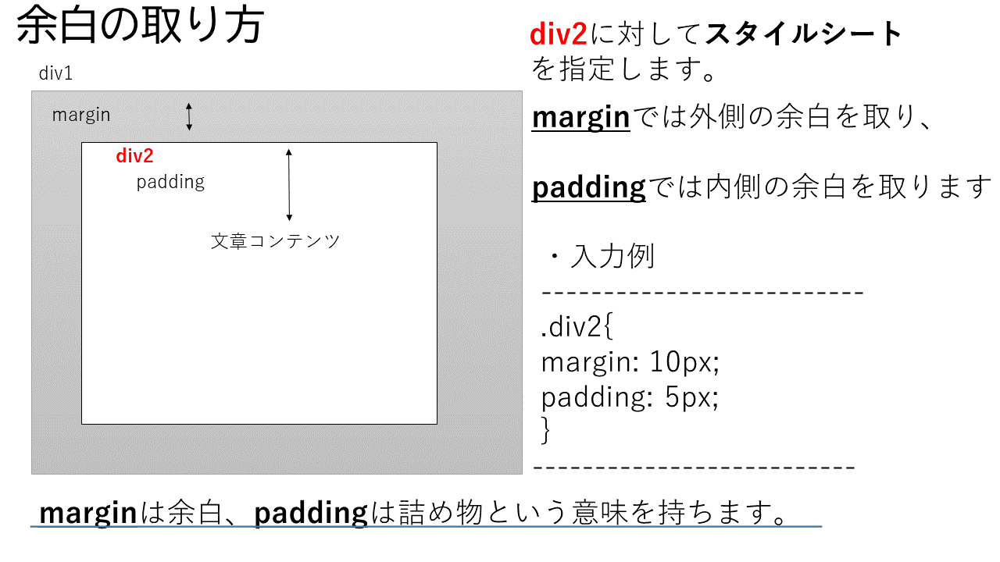
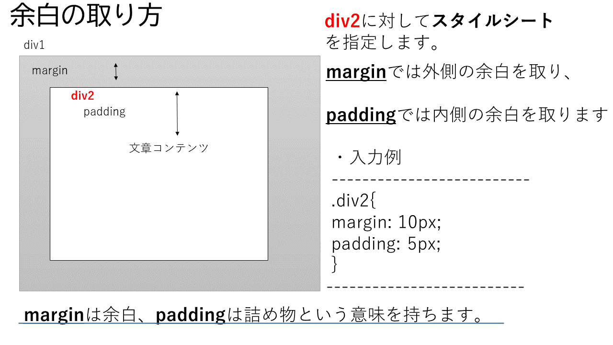
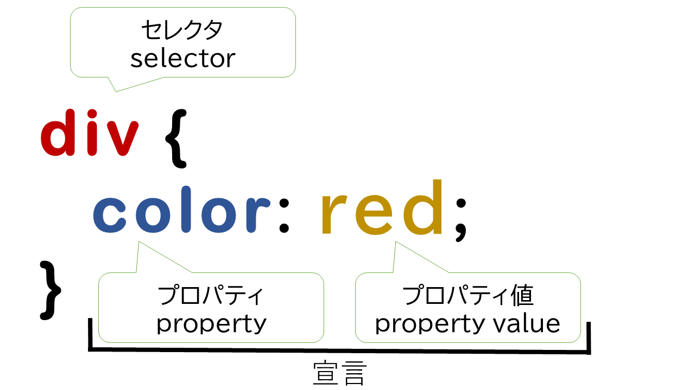

もくじ

CSSはプログラム言語でもマークアップ言語でもなく、スタイルシート言語です。
CSSはHTML要素を指定したスタイルに表示させる事ができます。
・外部CSSファイルを読み込む
・HTMLにstyleタグで直接書き込む
スタイルタグを記述することで、上のソースコードの1行目の開始タグから3行目の終了タグの間の文字をcssのソースコードとして認識させられます。改行しても終了タグまでスタイルの記述と認識されます。

●セレクター(selector)
ここにはスタイルを設定するhtml要素名を記述します。
タグ名をそのまま入れると、タグに適用され、クラス名、id名などでも指定することができます。
クラス名は複数に対して付与します。同じスタイルを複数の要素に適用したい時にクラスを使います。
idは固有に識別できる指標として扱うので、1つの要素に対してのみ付与します。
●宣言(declaration)
color: red;やmargin: 3px;の様な要素に対してスタイルを記述した部分の事です。
●プロパティ(Property)
html要素をスタイル付けするための属性です。
この部分でhtml要素に対してどのようなスタイルを指定するのかを決めます。
必ず記述の後に(:)コロンを付けます。
●プロパティ値
html要素に与えられたプロパティの度合の指定や、外観の選択をします。
・表示
宣言内ではコロンを使用してプロパティと値を分割する必要がある。
値を設定した後は必ず;(セミコロン)で区切る必要がある。
{}で囲った部分がセレクタ(スタイル適用対象)に対するスタイルの宣言部分となります。
ブラウザの種類やバージョンによって対応していない場合があるので注意してください。
今回は一般的な値と単位について見ていきます。
CSSとは
CSS (Cascading Style Sheets) は、ウェブページのスタイルを設定するコードです。CSSはプログラム言語でもマークアップ言語でもなく、スタイルシート言語です。
CSSはHTML要素を指定したスタイルに表示させる事ができます。
・外部CSSファイルを読み込む
- <link href="styles/style.css" rel="stylesheet">
- /*htmlファイルと同じフォルダ内にあるstylesフォルダの中のstyle.cssを読み込みます*/
- <link href="style.css" rel="stylesheet">
- /*htmlファイルと同じフォルダ内にあるstyle.cssを読み込みます*/
- <style>
- </style>

●セレクター(selector)
ここにはスタイルを設定するhtml要素名を記述します。
タグ名をそのまま入れると、タグに適用され、クラス名、id名などでも指定することができます。
クラス名は複数に対して付与します。同じスタイルを複数の要素に適用したい時にクラスを使います。
idは固有に識別できる指標として扱うので、1つの要素に対してのみ付与します。
●宣言(declaration)
color: red;やmargin: 3px;の様な要素に対してスタイルを記述した部分の事です。
●プロパティ(Property)
html要素をスタイル付けするための属性です。
この部分でhtml要素に対してどのようなスタイルを指定するのかを決めます。
必ず記述の後に(:)コロンを付けます。
●プロパティ値
html要素に与えられたプロパティの度合の指定や、外観の選択をします。
- <style>
- .test_box1{border: solid 1px;width: 500px;height: 200px;}
- .test_box2{margin: 30px; padding: 20px;border: solid 1px;height: 50%;}
- </style>
- <div class="test_box1">
- <div class="test_box2">
- 文章コンテンツ1<br>
- 文章コンテンツ2<br>
- 文章コンテンツ3<br>
- 文章コンテンツ4<br>
- </div>
- </div>
文章コンテンツ1
文章コンテンツ2
文章コンテンツ3
文章コンテンツ4
文章コンテンツ2
文章コンテンツ3
文章コンテンツ4
CSSの記述
 ●構文宣言内ではコロンを使用してプロパティと値を分割する必要がある。
値を設定した後は必ず;(セミコロン)で区切る必要がある。
{}で囲った部分がセレクタ(スタイル適用対象)に対するスタイルの宣言部分となります。
セレクタ一覧
スタイルを適用する対象を指定するセレクタ（selector）には以下のものがあります。ブラウザの種類やバージョンによって対応していない場合があるので注意してください。
| 名前 | セレクタの書式 | スタイルを適用する対象 | 使用例 |
|---|---|---|---|
| 要素型セレクタ | 要素名 | 要素名で指定した要素 | p {color:blue;} |
| 全称セレクタ | * | すべての要素 | * {color:blue;} |
| classセレクタ | 要素名.クラス名 | クラス名を付けた要素 | p.sample {color:blue;} |
| idセレクタ | 要素名#id名 | id名を付けた要素 | div#sample {color:blue;} |
| 擬似クラス | 要素名:link | 未訪問のリンク | a:link {color:blue;} |
| 要素名:visited | 訪問済のリンク | a:visited {color:blue;} | |
| 要素名:hover | カーソルが乗っている要素 | a:hover {color:blue;} | |
| 要素名:active | クリック中の要素 | a:active {color:blue;} | |
| 要素名:focus | フォーカスされている要素 | input:focus {background:blue;} | |
| 要素名:lang | 特定の言語を指定した要素 | p:lang(en) {color:blue;} | |
| 要素名:first-child | 要素内の最初の子要素 | p:first-child {color:blue;} | |
| 擬似要素 | 要素名:first-line | 要素の最初の一行 | p:first-line {color:blue;} |
| 要素名:first-letter | 要素の最初の一文字 | p:first-letter {color:blue;} | |
| 要素名:before | 要素の直前 | blockquote:before {content:"『";} | |
| 要素名:after | 要素の直後 | blockquote:after {content:"』";} | |
| 属性セレクタ | 要素名[属性名] | 特定の属性を持つ指定要素 | a[target] {color:blue;} |
| 要素名[属性名= "属性値"] | 特定の属性値を持つ指定要素 | a[target="_blank"] {color:blue;} | |
| 要素名[属性名~= "属性値"] | 属性値候補と一致した要素 | p[class~="sample"] {color:blue;} | |
| 複数のセレクタ | セレクタ,セレクタ | 複数のセレクタ | h1, h2 {color:blue;} |
| 子孫セレクタ | セレクタ セレクタ | 下の階層の子孫要素 | p strong {color:blue;} |
| 子セレクタ | セレクタ>セレクタ | 直下の階層の子要素 | p > strong {color:blue;} |
| 隣接セレクタ | セレクタ+セレクタ | 直後に隣接している要素 | h1 + p {color:blue;} |
cssの値と単位
CSSで使用されるすべてのプロパティには、特定の値または組み合わせのみが許可されています。今回は一般的な値と単位について見ていきます。
- h1{
- color: black;
- background-color: rgb(197,93,161);
- }
| Unit | 名前 | 換算 |
|---|---|---|
cm |
Centimeters センチメートル | 1cm = 96px/2.54 |
mm |
Millimeters ミリメートル | 1mm = 1/10 cm |
Q |
Quarter-millimeters 1/4 ミリメートル | 1Q = 1/40 1cm |
in |
Inches インチ | 1in = 2.54cm = 96px |
pc |
Picas パイカ | 1pc = 1in の 1/6 |
pt |
Points ポイント | 1pt = 1in の 1/72 |
px |
Pixels ピクセル | 1px = 1in の 1/96 |
| Unit | 関係先 |
|---|---|
em |
親要素のフォントサイズ. |
ex |
その要素のフォントの文字 "x" の高さ |
ch |
その要素のフォントの文字 "0" の幅 |
rem |
ルート要素のフォントサイズ |
lh |
その要素の line-hight プロパティと同じ |
vw |
ビューポート幅の 1% |
vh |
ビューポート高さの 1% |
vmin |
ビューポート幅と高さの小さい方の 1% |
vmax |
ビューポート幅と高さの大きい方の 1% |
もくじ
第1章 第2章
・表示
・表示
・表示
123 あいう カキク
123 あいう カキク
表示
テスト
テスト2
ラーメン
第1章 第2章
- 直線を敷く
- 文字の横幅を変える
- 文字の縦幅を変える
- 文字色を変える
- ブロックの場所を操る
- ボーダー(外枠)
- 滑らかにスタイルを変える
- ドロップダウンメニュー
- ハンバーガーメニュー
- 画面サイズに合わせてレスポンシブ対応
- ラベルデザイン
- 余白を指定する
- フォントの変更
- aタグの中の文字の下線を消す
- 点線を表示させる
- 背景画像を固定する
- 文字に背景色を付ける
- 図形を描画
- 見出しデザイン
- カーソルを合わせたときに色を変える
- 影を付ける
- 中央揃え右揃え左揃え
- htmlタグの中に記述
- サイトのcssを読み取る
- 背景色の指定・透過色
直線を敷く
- <hr class="hr_ClassName"><!--HTMLソース-->
- <style>
- .hr_ClassName {
- border-top: 1px solid #333; }
- </style>
- <style>
- .hr_ClassName {
- border-top: 4px double #333; }
- </style>
- <style>
- .hr_ClassName {
- border-top: 4px dotted #333; }
- </style>
- <style>
- .hr_ClassName {
- border-top: 4px dashed #333;
- background-color: #faa; }
- </style>
- <hr style="border:0.3px dashed #87CEEB;">
- <hr style="border:0.3px dashed #777E7B;">
文字の横間隔を変える
- <span class="spacing_span">
- 123 あいう カキク
- </span>
- <br>
- 123 あいう カキク
- <style>
- .spacing_span {
- letter-spacing: 3px;
- }
- </style>
123 あいう カキク
123 あいう カキク
文字の立幅を変える
文字色を変える
- <span class="FontColor_TestSpan">
- テスト
- </span>
- <style>
- .FontColor_TestSpan {
- color: #abcdef; }
- </style>
- <font color="#abcdef">テスト2</span>
テスト
テスト2
ブロックの場所を操る
ボーダー(外枠)
滑らかにスタイルを変える
ドロップダウンメニュー
ハンバーガーメニュー
画面サイズに併せてレスポンシブ対応
ラベルデザイン
余白を指定する
フォントの変更
aタグの文字の下線を消す
- <style>
- a {
- text-decoration: none; }
- </style>
点線を表示させる
背景画像を固定する
文字に背景色をつける
- <span style="background-color:#ee0000">
図形を描画
見出しデザイン
カーソルを合わせたときに色を変える
- .Class_Name:hover{
- transition: 0.5s;
- background-color: #ccc;
- color: #222;
- }
影を付ける
中央ぞろえ右揃え左揃え
- <>